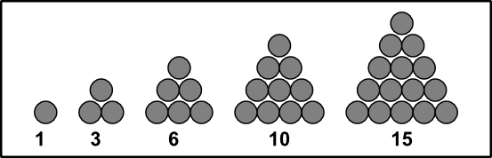
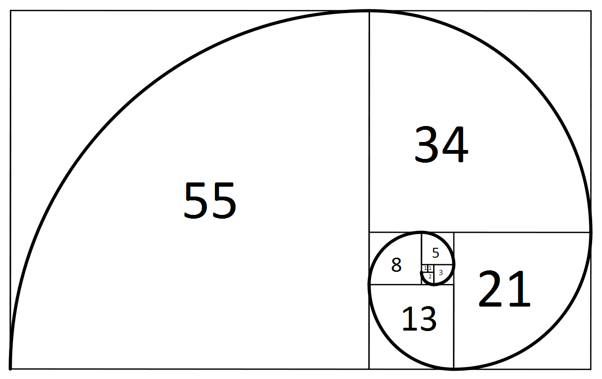
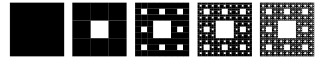

Recursie
Welkom bij het vak Algoritmiek 2! Deze eerste week gaan we kijken naar een belangrijke techniek die we voor alle komende weken weer gaan gebruiken. Recursie! In dit dictaat vind je alle opdrachten voor dit vak. Je mag zelf een programmeertaal kiezen om de opdrachten te maken als er geen taal genomend is
Pyramide probleem

Deze opdracht gaan we kijken naar driehoeksgetallen. De functie ) is gedefinieerd als
is gedefinieerd als  + (n-2) + ... + 3 + 2 + 1) . Bijvoorbeeld:
. Bijvoorbeeld:  = 6 + 5 + 4 + 3 + 2 + 1 + 0 = 21) . Je kan dit ook zien als het aantal balletjes in een pyramide die 6 laagjes hoog is
. Je kan dit ook zien als het aantal balletjes in een pyramide die 6 laagjes hoog is
. Je kan de functie ook recursief definiëren als:
 = n + $driehoeksgetal$(n - 1), $driehoeksgetal$(0) = 0)
- Schrijf de functie op een iteratieve manier (dus met een loopje)
- Schrijf de functie op een recursieve manier
- Test beide functie met grote waardes voor
n, is er een functie die sneller is? Zo ja, welke?
Fibonacci

De rij van Fibonacci krijg je door elke keer de vorige twee cijfers bij elkaar op te tellen, je begint de rij met 0 en 1:

- Bedenk hoe je de functie recursief kan definiëren (begin met
 = 0) )
)
- Schrijf de functie op zowel een iteratieve als een recursieve manier
- Test weer beide functies met grote waardes, welke manier is sneller? Waarom is dat zo?
Tapijt van Sierpinski

Het Tapijt van Sierpiński is een fractal die je kan maken door acht vierkanten te tekenen rondom een middelste vierkant dat je niet tekent. Dit herhaal je ad infinitum voor elk van deze subvierkanten. (Er is ook een versie waarbij je juist alleen maar het middelste vierkant tekent, maar daar staan al teveel voorbeelden van op internet ;) ).
- Maak een klein programmaatje dat het Sierpinski tapijt kan weergeven. De gebruiker moet kunnen aangeven hoeveel "niveau's" van het tapijt worden getekend.
- Hoeveel niveau's kan jouw computer aan? Hoeveel vierkantjes moet het dan tekenen?